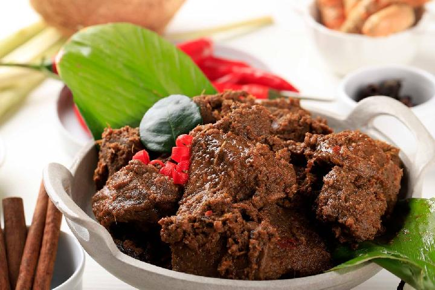
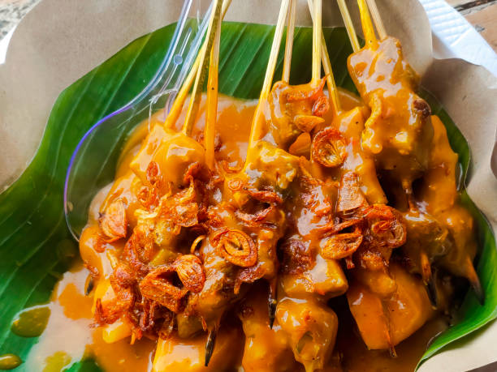
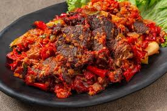
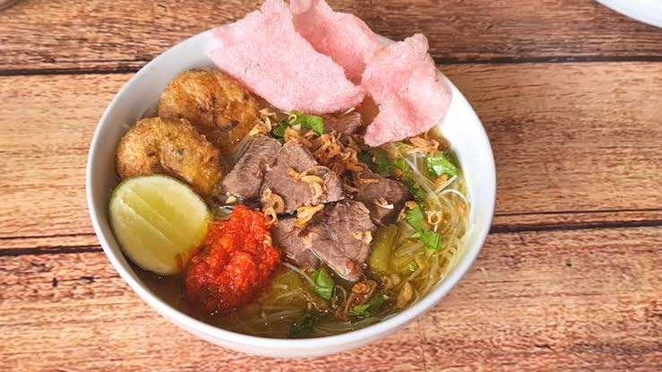

6 Menu Makanan Khas Sumatra Barat 🌿

Rendang
Masakan daging sapi yang dimasak dengan rempah dan santan hingga kering dan harum.
Bahan-bahan:
- 1 kg daging sapi, potong-potong
- 400 ml santan kental
- 10 siung bawang merah
- 5 siung bawang putih
- 5 cabai merah besar
- 2 cm jahe
- 2 cm lengkuas
- 2 batang serai, memarkan
- 3 lembar daun jeruk
- Garam dan gula secukupnya
Cara membuat:
- Haluskan bawang merah, bawang putih, cabai, jahe, dan lengkuas.
- Tumis bumbu halus dengan serai dan daun jeruk hingga harum.
- Masukkan daging, aduk hingga berubah warna.
- Tuang santan, masak dengan api kecil sambil terus diaduk hingga santan menyusut dan bumbu meresap, sekitar 3-4 jam.
- Beri garam dan gula, aduk rata. Masak hingga daging empuk dan kuah mengering.
- Sajikan rendang dengan nasi hangat.

Sate Padang
Sate khas Padang dengan bumbu kental dan pedas dari tepung beras dan rempah.
Bahan-bahan:
- 500 gr daging sapi, potong dadu
- Tusuk sate secukupnya
- 5 siung bawang merah
- 3 siung bawang putih
- 3 cabai merah
- 1 sdm tepung beras
- 1 liter kaldu sapi
- 2 batang serai, memarkan
- Garam dan gula secukupnya
Cara membuat:
- Rebus daging dengan serai hingga empuk, tiriskan dan tusuk pada tusuk sate.
- Haluskan bawang merah, bawang putih, dan cabai, tumis hingga harum.
- Campur kaldu dengan tepung beras, aduk rata, masak hingga mengental.
- Masukkan bumbu tumis, garam, dan gula, aduk hingga bumbu meresap dan saus mengental.
- Siram sate dengan saus, sajikan hangat.

Dendeng Balado
Irisan daging sapi kering yang digoreng dan dibumbui sambal balado pedas khas Minang.
Bahan-bahan:
- 300 gr dendeng sapi kering
- 10 cabai merah
- 5 siung bawang merah
- 3 siung bawang putih
- 2 tomat merah
- Garam dan gula secukupnya
- Minyak goreng
Cara membuat:
- Haluskan cabai, bawang merah, bawang putih, dan tomat.
- Tumis bumbu halus hingga harum dan matang.
- Masukkan dendeng, aduk rata hingga bumbu meresap.
- Goreng sebentar agar kering dan renyah, angkat dan sajikan.

Soto Padang
Soto dengan kuah bening dan daging sapi goreng khas Padang, gurih dan segar.
Bahan-bahan:
- 500 gr daging sapi, potong kecil
- 2 liter kaldu sapi
- 5 siung bawang merah
- 3 siung bawang putih
- 2 batang serai, memarkan
- 3 lembar daun salam
- Garam dan lada secukupnya
- Minyak goreng untuk menggoreng daging
- Bawang goreng dan irisan daun bawang untuk taburan
Cara membuat:
- Rebus daging hingga empuk, tiriskan dan goreng hingga kering dan renyah.
- Rebus kaldu dengan bawang, serai, dan daun salam hingga harum.
- Masukkan daging goreng ke dalam mangkuk, siram dengan kuah panas.
- Taburi bawang goreng dan daun bawang, sajikan hangat.
Gulai Itiak Lado Mudo
Masakan bebek kuah gulai dengan cabai hijau khas Minang, pedas dan nikmat.
Bahan-bahan:
- 1 ekor bebek, potong-potong
- 200 ml santan kental
- 10 cabai hijau besar
- 5 siung bawang merah
- 3 siung bawang putih
- 2 cm jahe
- 2 batang serai, memarkan
- Garam dan gula secukupnya
Cara membuat:
- Rebus bebek hingga empuk, tiriskan.
- Haluskan cabai hijau, bawang merah, bawang putih, dan jahe.
- Tumis bumbu halus dengan serai hingga harum.
- Masukkan bebek dan santan, masak dengan api kecil hingga kuah mengental.
- Beri garam dan gula, aduk rata, angkat dan sajikan.

Soto Padang
Sup daging sapi khas Padang dengan kuah bening dan taburan perkedel serta emping yang gurih.
Bahan-bahan:
- 500 gr daging sapi, rebus dan suwir
- 2 liter kaldu sapi
- 5 siung bawang merah
- 3 siung bawang putih
- 2 batang serai, memarkan
- 2 lembar daun salam
- Garam dan merica secukupnya
- Perkedel kentang dan emping sebagai pelengkap
- Daun bawang dan seledri cincang
Cara membuat:
- Tumis bawang merah dan bawang putih hingga harum.
- Masukkan serai dan daun salam, tuang kaldu sapi, didihkan.
- Masukkan daging suwir, beri garam dan merica, masak beberapa menit.
- Siapkan mangkuk, tuang kuah dan daging, taburi daun bawang dan seledri.
- Sajikan dengan perkedel kentang dan emping di atasnya.